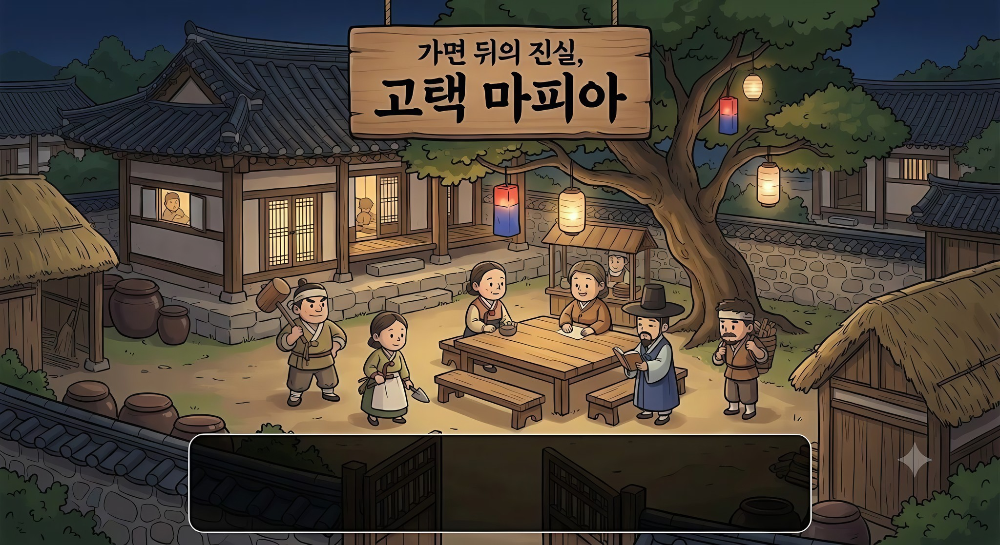

가면 뒤의 진실 · 그림 갤러리
게임에 들어간 그림 54장과 아직 없는 그림 14장. 그림을 누르면 원본 크기로 열려요.
바꾸는 법
- 바꾸고 싶은 그림을 길게 눌러 저장하거나 파일 이름을 확인해요.
- 제미나이에서 같은 비율로 새로 그려요.
- 프로젝트 스레드에 "
img/hoe/h_night.jpg이걸로 바꿔줘"처럼 파일 이름과 함께 올려주면 같은 자리에 넣고 배포해요.
메인 배경 1장
게임 전체 배경. 그림이 없는 호외·결말은 이 그림을 세피아로 잘라 대신 씀.

img/main.jpg1024×559px프로필 아바타 16장제가 그린 그림
대기실과 게임 중 자리 칸, 내 프로필. 얼굴을 가린 식구. 남 M1~M8, 여 F1~F8 (자리 순서대로 돌아가며 씀).

img/avatar/F1.svg100×100px · 1KB
img/avatar/F2.svg100×100px · 1KB
img/avatar/F3.svg100×100px · 1KB
img/avatar/F4.svg100×100px · 1KB
img/avatar/F5.svg100×100px · 1KB
img/avatar/F6.svg100×100px · 1KB
img/avatar/F7.svg100×100px · 1KB
img/avatar/F8.svg100×100px · 1KB
img/avatar/M1.svg100×100px · 1KB
img/avatar/M2.svg100×100px · 1KB
img/avatar/M3.svg100×100px · 1KB
img/avatar/M4.svg100×100px · 1KB
img/avatar/M5.svg100×100px · 1KB
img/avatar/M6.svg100×100px · 1KB
img/avatar/M7.svg100×100px · 1KB
img/avatar/M8.svg100×100px · 1KB신분 초상 17장
호패(내 카드), 탈락 후 자리 칸, 정체 공개 액자, 직업 도감, 결말 호패 공개.

img/sinbun/김매는_아낙.jpg300×300px · 40KB
img/sinbun/낙방한_선비.jpg300×300px · 38KB
img/sinbun/닭_치는_과부.jpg300×300px · 36KB
img/sinbun/돌쇠.jpg300×300px · 37KB
img/sinbun/떠돌이_소리꾼.jpg300×300px · 35KB
img/sinbun/막내_아씨.jpg300×300px · 36KB
img/sinbun/빨래터_아낙.jpg300×300px · 38KB
img/sinbun/사랑채_할배.jpg300×300px · 38KB
img/sinbun/소작농.jpg300×300px · 40KB
img/sinbun/엿장수.jpg300×300px · 43KB
img/sinbun/이웃집_할매.jpg300×300px · 38KB
img/sinbun/이장님.jpg300×300px · 37KB
img/sinbun/종부_마님.jpg300×300px · 34KB
img/sinbun/주막_주모.jpg300×300px · 39KB
img/sinbun/하산한_비구니.jpg300×300px · 36KB
img/sinbun/한량.jpg300×300px · 42KB
img/sinbun/훈장님.jpg300×300px · 41KB직업 그림 · 결말 장식 11장
제미나이에서 받은 그림을 잘라 쓴 것.

img/gemini/d_books.jpg229×400px · 24KB
img/gemini/d_flor.jpg203×215px · 19KB
img/gemini/d_jars.jpg195×290px · 16KB
img/gemini/d_tasL.jpg67×200px · 10KB
img/gemini/d_tasR.jpg63×195px · 9KB
img/gemini/e_perfect.jpg505×360px · 70KB
img/gemini/j_dolsoe.jpg215×365px · 32KB
img/gemini/j_ijang.jpg170×365px · 26KB
img/gemini/j_jumo.jpg185×365px · 31KB
img/gemini/j_mafia.jpg190×365px · 22KB
img/gemini/j_podo.jpg190×365px · 32KB호외 · 결말 그림 9장
호외 신문 그림과 결말 포토카드. 그림이 있는 호외는 3배 자주 뽑힘.

img/hoe/c_fast.jpg155×120px · 16KB
img/hoe/c_win.jpg156×120px · 16KB
img/hoe/h_dolsoe.jpg214×181px · 26KB
img/hoe/h_night.jpg206×209px · 22KB
img/hoe/h_police.jpg155×120px · 15KB
img/hoe/h_saved.jpg155×120px · 14KB
img/hoe/h_wrong.jpg205×230px · 27KB
img/hoe/m_last.jpg154×120px · 13KB
img/hoe/m_wrong.jpg205×209px · 27KB아직 없는 그림 14장
지금은 다른 그림으로 대신 채우고 있어요. 이 이름으로 만들어 보내주면 바로 넣어요.
비어 있음
img/hoe/m_fool.jpg3:2 가로 · 글자 없이비어 있음
img/hoe/c_perfect.jpg3:2 가로 · 글자 없이비어 있음
img/hoe/c_pyrrhic.jpg3:2 가로 · 글자 없이비어 있음
img/hoe/c_amhaeng.jpg3:2 가로 · 글자 없이비어 있음
img/hoe/h_caught.jpg3:2 가로 · 글자 없이비어 있음
img/hoe/h_tie.jpg3:2 가로 · 글자 없이비어 있음
img/hoe/h_none.jpg3:2 가로 · 글자 없이비어 있음
img/hoe/h_soldier.jpg3:2 가로 · 글자 없이비어 있음
img/hoe/h_nightDoctor.jpg3:2 가로 · 글자 없이비어 있음
img/hoe/h_nightPolice.jpg3:2 가로 · 글자 없이비어 있음
img/gemini/j_ijang_F.jpg세로 1:2 · 글자 없이비어 있음
img/gemini/j_podo_F.jpg세로 1:2 · 글자 없이비어 있음
img/gemini/j_mafia_F.jpg세로 1:2 · 글자 없이비어 있음
img/icons.png정사각 칸 여러 개 · 글자 없이